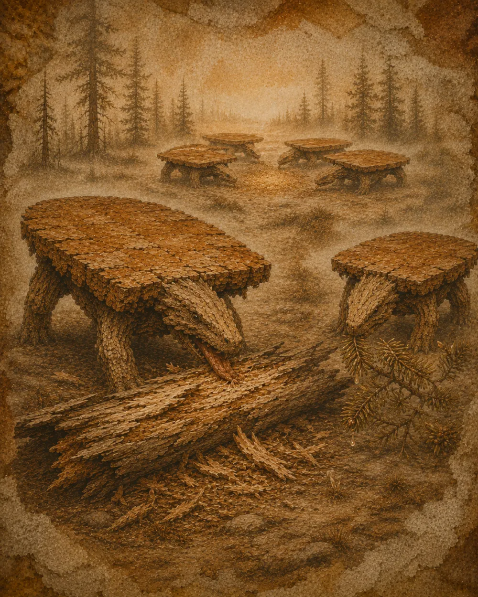

Nahrung
Ernährung
Entgegen einer hartnäckigen Annahme ernährt sich der lebende Tisch nicht von dem, was man auf ihn stellt.

Ein unauffälliger Holzfresser
Er grast totes Holz, Späne und weiche Rinde ab, die er langsam verdaut, um seine Platte zu pflegen. Seine Zunge — ein langes, raues Filzband unter der Schublade — schabt Flächen ab und sammelt Holzstaub.
Die selteneren lackierten Arten ergänzen diese Kost mit süßen Harzen, die sie an versteinerten Kiefern ernten.
Das Gold der Ebenen
Die Verdauung erzeugt feines Sägemehl, das der Tisch nachts hervorbringt: ein wertvoller Humus, der die Ebene düngt und wiederum die Wälder nährt, die er abweiden wird. Alles hängt zusammen.